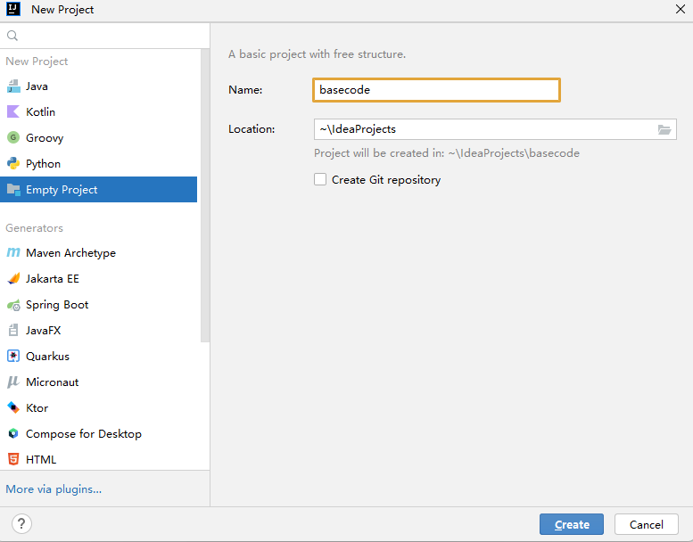
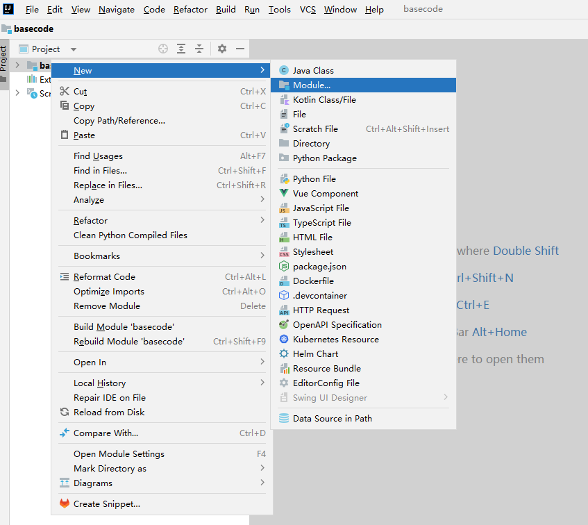
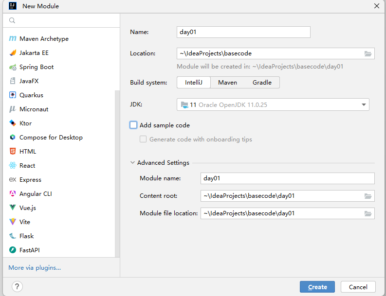
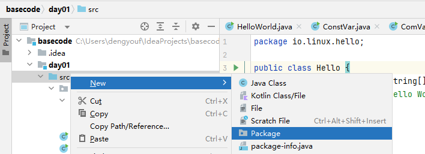
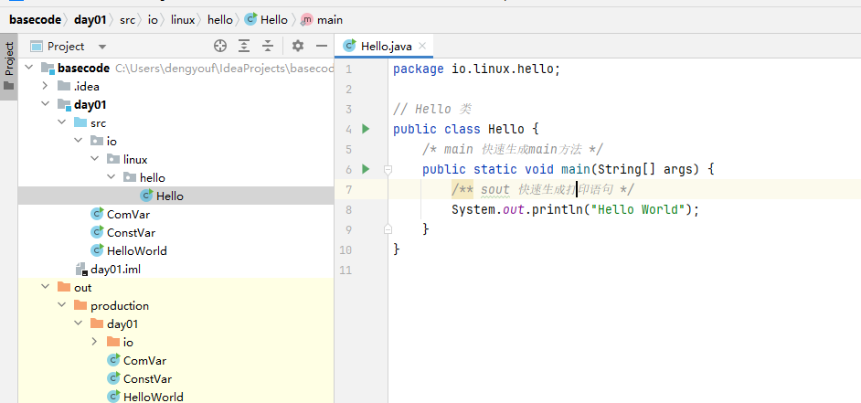
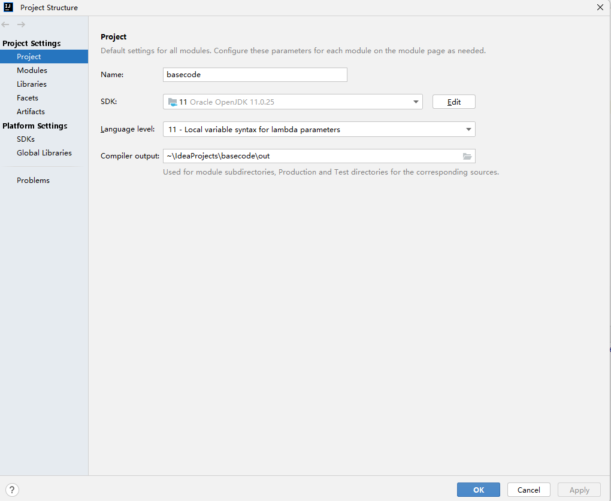
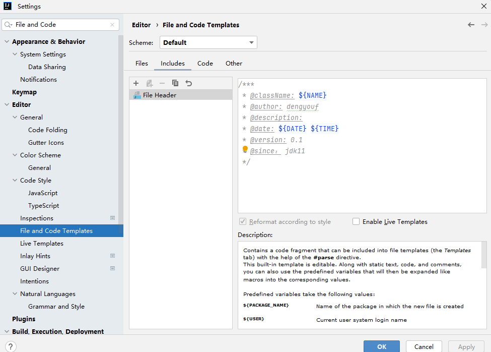
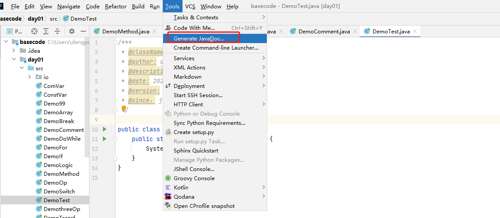
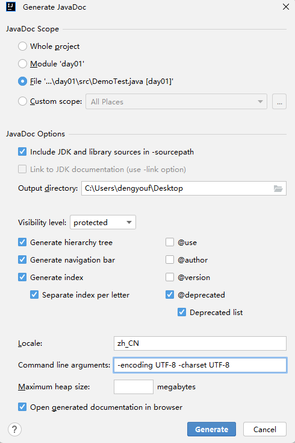

Java 基础
1. Idea 使用
1.1 新建项目-basecode

1.2 新建模块-day01


1.3 新建包-io.linux.io

1.4 新建类-Hello

package io.linux.hello;
// Hello 类
public class Hello {
/* main 快速生成main方法 */
public static void main(String[] args) {
/** sout 快速生成打印语句 */
System.out.println("Hello World");
}
}
1.5 设置 SDK 和 语言级别

1.5 文档注释
给类或者方法添加注释，注释的内容会产生在生成的 java 文档中

/***
* @className: ${NAME}
* @author: dengyouf
* @description:
* @date: ${DATE} ${TIME}
* @version: 0.1
* @since： jdk11
*/
/***
* @className: DemoTest
* @author: dengyouf
* @description: 文档案例
* @date: 2025/1/8 15:55
* @version: 0.1
* @since： jdk11
*/
public class DemoTest {
public static void main(String[] args) {
System.out.println("Hello World");
}
}
本地化输出文档： -encoding UTF-8 -charset UTF-8


2. 基础语法
2.1 常量
字面量或者称为常量, 表示代码执行期间，其值不能发生改变的量.
| 常量 | 表达方式 | 备注 |
|---|---|---|
| 字符串 | "hello world" | 使用双引号括起来的内容 |
| 整数 | 18 -18 120 | 所有的整数 |
| 小数 | 3.14 -5.66 -1.0 | 所有的小数 |
| 字符 | 'a' '国' | 使用单引号括起来的内容 |
| 布尔 | true false | |
| 空常量 | null | 不能直接打印 |
public class ConstVar {
public static void main(String[] args) {
System.out.println("Hello World");
System.out.println('A');
System.out.println((int)'A');
System.out.println(19);
System.out.println(3.14);
}
}
2.2 变量
程序执行过程中，在某个范围内其值可以发生变化的量，本质是一段命名的内存空间。
格式：
数据类型 变量名 = 字面常量
public class ComVar {
public static void main(String[] args) {
// 变量的作用域在 {} 内
{
int i; // 先声明
i = 10; // 初始化
System.out.println(i);
// 声明的同时进行初始化
int ii = 20;
System.out.println(ii);
}
{
int i =20;
System.out.println(i);
}
// 同类型可以放在一行定义
int a = 10, b=20, c=30;
System.out.printf("a=%d, b=%d, c=%d\n", a, b, c);
}
}
2.3 基本数据类型
| 基本数据类型 | 类型 | 字节数 | 数据范围 |
|---|---|---|---|
| 整数类型 | byte | 1 | -128~127 |
| short | 2 | -2^15 ~2^15 - 1 | |
| int(默认) | 4 | -2^31 ~ 2^31 -1 | |
| long | 8 | -2^63~2^63 -1 | |
| 浮点型 | float | 4 | -3.40308 ~ -3.40308 |
| double(默认) | 8 | -1.79E308 ~ -1.79E308 | |
| 字符类型 | char | 2 | 0~65535 |
| 字符串 | String | ||
| 布尔类型 | boolean | 1 | true or false |
public class DemoVar {
public static void main(String[] args) {
// 长整型需要在数字后添加l或者L，建议使用L
long num = 800000000L;
System.out.println(num);
// 浮点型需要在数字后添加 f 或者 F，推荐使用F
float num2 = 8.0f;
System.out.println(num2);
// 强制类型转换
char ch = 'a';
System.out.println((int)ch);
}
}
2.4 类型转换
当数据类型不一致时，需要进行类型转换
自动类型转换： 由小范围的数据类型转为大范围的数据类型，代码不需要处理，自动完成转换
显示类型转换： 由大范围的数据类型转为小范围的数据类型，要显示指定要转换的类型，可能会造成精度缺失，不推荐使用
public class DemoTransf {
public static void main(String[] args) {
int a =10;
long b = a;
System.out.printf("a=%d, b=%d\n", a,b);
// 任意一个整数都可以赋值给小数变量，但可能会导致进度丢失
// 虽然 int 和 float 都为4个字节，但是 int 类型表示整数比 float 要多，所以会丢失精度
int i = 1211111111;
float f = i;
System.out.printf("i=%d, f=%f\n", i,f);
// 强制类型转换
long m = 100L;
int n = (int)m;
System.out.printf("m=%d, n=%d\n", m,n);
}
}
2.5 运算符
2.5.1 算术运算符
| 符号 | 说明 |
|---|---|
| + | 加 |
| - | 减 |
| * | 乘 |
| / | 除 |
| % | 取余 |
| ++ | 自增 |
| -- | 自减 |
| += | |
| -= | |
| *= | |
| /= | |
| %= |
public class DemoOp {
public static void main(String[] args) {
int a = 10;
int b = 3;
// 两个整数运算，获取的结果一定是整数
System.out.println(a / b);
System.out.println(a % b);
float m = 10.0f;
float n = 3.0f;
// 两个浮点数运算，结果该是多少就是多少
System.out.println(m / n);
System.out.println(m % n);
// 只要 / 两端出现小数，其结果肯定是小数
System.out.println(a / n);
// 字符串+任意类型=字符串
String s ="hello world";
System.out.println(s+10);
}
}
public class SelfOp {
public static void main(String[] args) {
int a = 7;
int c = ++a + 5 + --a + 12 + a++;
// c = 8 + 5 + 7 + 12 + 7
System.out.println(a); // 8
System.out.println(c); // 39
}
}
2.5.2 赋值运算符
| 符号 | 说明 |
|---|---|
| += | |
| -= | |
| *= | |
| /= | |
| %= |
public class SelfOp {
public static void main(String[] args) {
int a = 4;
int num = a += a -= a *= ++a;
// num = a += a -= (a *= ++a )
// num = 4 += 4 -= (4 * 5)
// num = 4 += 4 -= 20
// num = 8 -= 20
System.out.println(num);
}
}
2.5.3 关系运算符
关系运算符返回值一定是 boolean 类型
| 符号 | 说明 |
|---|---|
| == | 等于 |
| != | 不等于 |
| > | 大于 |
| < | 小于 |
| >= | 大于等于 |
| <= | 小于等于 |
2.5.4 逻辑运算符
| 符号 | 说明 |
|---|---|
| & or && | 与 |
| | or || | 或 |
| ^ | 异或 |
| ! | 取反 |
对于 && 和 || 而言，具有短路效果，建议使用, && 的优先级高于 ||
public class DemoLogic {
public static void main(String[] args) {
int a = 10;
int b = 20;
int c = 10;
System.out.println((a == c) & (b>c));
System.out.println((a == c) | (b>c));
System.out.println((a == c) ^ (b>c));
System.out.println((a == c) ^ (b>c));
System.out.println(!((a == c) ^ (b>c)));
System.out.println((a == c) && (b>c));
System.out.println((a == c) || (b>c));
}
}
2.5.5 三目运算符
public class DemothreeOp {
public static void main(String[] args) {
int a = (3<5)?1:4;
System.out.println(a);
int m=10, n=20;
int max = m>n?m:n;
System.out.println(max);
}
}
2.6 控制台输入
// 导包
import java.util.Scanner;
public class StdInput {
public static void main(String[] args) {
// 创建
Scanner sc = new Scanner(System.in);
System.out.print("请输入一个整数: ");
// 使用
int i = sc.nextInt();
System.out.println(i);
}
}
2.7 流程控制
2.7.1 顺序结构
从上而下顺序执行
public class OrderExec {
public static void main(String[] args) {
System.out.println("11111111111111");
System.out.println("22222222222222");
System.out.println("33333333333333");
}
}
2.7.2 分支结构
if 分支结构
import java.util.Scanner;
public class DemoIf {
public static void main(String[] args) {
Scanner sc = new Scanner(System.in);
System.out.print("请输入你的年龄：");
int age = sc.nextInt();
if (age >= 18) // 单分支请{}内只有一条语句，{}可省略
System.out.println("你已成年");
}
}
if-else 分支结构
import java.util.Scanner;
public class DemoIf {
public static void main(String[] args) {
Scanner sc = new Scanner(System.in);
System.out.print("请输入你的年龄：");
int age = sc.nextInt();
if (age >= 18){
System.out.println("你已成年");
} else {
System.out.println("你未成年");
}
}
}
if-else-if 分支结构
import java.util.Scanner;
public class DemoIf {
public static void main(String[] args) {
Scanner sc = new Scanner(System.in);
System.out.print("请输入你的分数：");
float score = sc.nextFloat();
if (score >= 80 && score < 100) {
System.out.println("您的成绩：优秀");
} else if (score >= 70 && score < 80) {
System.out.println("您的成绩：良好");
} else if (score >= 60 && score < 70) {
System.out.println("您的成绩：合格");
} else {
System.out.println("您的成绩：不合格");
}
}
}
switch语句
import java.util.Scanner;
public class DemoSwitch {
public static void main(String[] args) {
Scanner sc = new Scanner(System.in);
System.out.print("请输入一个数字: ");
int num = sc.nextInt();
switch (num) {
case 1:
System.out.println("星期一");
break;
case 2:
System.out.println("星期二");
break;
case 3:
System.out.println("星期三");
break;
case 4:
System.out.println("星期四");
break;
case 5:
System.out.println("星期五");
break;
case 6:
case 7:
System.out.println("周末");
break;
default:
System.out.println("输入错误");
}
}
}
2.7.3 循环结构
for 循环
public class DemoFor {
public static void main(String[] args) {
int sum = 0;
for (int i = 0; i < 10; i++) {
System.out.println(i);
sum+=i;
}
System.out.println(sum);
}
}
while 循环
public class DemoWhile {
public static void main(String[] args) {
int i = 1;
while (i < 10) {
System.out.println(i);
i++;
}
}
}
do-while 循环
public class DemoDoWhile {
public static void main(String[] args) {
int i = 0;
do {
System.out.println(i);
i++;
}while (i < 10);
}
}
2.7.5 break & contine
break 结束循环，如果嵌套多个for循环，则中断最近的for循环，不影响外部的循环
public class DemoBreak {
public static void main(String[] args) {
for (int i = 0; i < 5; i++) {
if (i == 3) {
break;
}
System.out.println(i);
}
}
}
---------------------------
0
1
2
contine：跳过本次循环，直接进入下一次循环，如果嵌套多个for循环，则跳过最近的for循环，不影响外部的循环
public class DemoBreak {
public static void main(String[] args) {
for (int i = 0; i < 5; i++) {
if (i == 3) {
continue; // 结束本次循环，返回
}
System.out.println(i);
}
}
}
----------------------------
0
1
2
4
3. 数组
3.1 数组的定义
数组是装着相同数据类型的元素的容器，如果要使用数组，需要在声明后，进行初始化。
import java.util.Arrays;
public class DemoArray {
public static void main(String[] args) {
// 声明并初始化
int[] arr = new int[5];
arr[0] = 10;
arr[1] = 20;
arr[arr.length-1] = 100;
System.out.println(Arrays.toString(arr));
// 静态初始化
int [] arr2 = new int[]{4, 5, 6, 7};
arr2[2] = 200;
System.out.println(Arrays.toString(arr2));
// 静态数组
int [] arr3 = {1, 2, 3, 4};
System.out.println(Arrays.toString(arr3));
}
}
3.2 数组的遍历
通过 for 循环进行遍历
public class DemoArray {
public static void main(String[] args) {
int [] arr3 = {1, 2, 3, 4};
for (int i = 0; i < arr3.length; i++) {
System.out.println(arr3[i]);
}
}
}
public class DemoArray {
public static void main(String[] args) {
// 静态数组
int [] arr3 = {1, 2, 3, 4};
// 仅支持变量，不支持修改数组元素
for (int ele : arr3) {
System.out.println(ele);
}
}
}
3.3 数组的最值
public class DemoArray {
public static void main(String[] args) {
// 静态数组
int [] arr = {15, 23, 19, 45, 68};
int max = arr[0];
for ( int ele : arr) {
if (ele > max) {
max = ele;
}
}
System.out.println(max);
}
}
3.4 数组的扩容
在Java中，数组是固定长度的，一旦创建就无法更改其长度。然而，在实际的编程过程中，我们可能会遇到需要动态扩展数组长度的需求，面对这种情况，有两种主要的处理方式：
创建一个新的更大的数组，然后将原数组的元素复制到新数组中
import java.util.Arrays;
public class DemoArray {
public static void main(String[] args) {
// 静态数组
int[] arr = {15, 23, 19, 45, 68};
// 扩容2倍
int[] new_arr = new int[arr.length * 2];
// arraycopy(源数组,从哪个元素开始copy, 目标数组，从哪个索引处开始, 拷贝长度)
System.arraycopy(arr, 0, new_arr, 0, arr.length);
System.out.println(Arrays.toString(arr));
System.out.println(Arrays.toString(new_arr));
int[] new_arr2 = Arrays.copyOf(arr, arr.length*2);
System.out.println(Arrays.toString(new_arr2));
}
}
使用Java集合框架中的ArrayList类，它在内部使用数组存储元素，并自动处理数组扩容的操作
3.5 数组的反转
定义新数组，通过索引组合新的数组
import java.util.Arrays;
public class DemoArray {
public static void main(String[] args) {
// 静态数组
int[] arr = {15, 23, 19, 45, 68};
int []reverse_arr = new int[arr.length];
for (int i = 0; i < arr.length; i++) {
reverse_arr[i] = arr[arr.length - 1 - i];
}
System.out.println(Arrays.toString(reverse_arr));
}
}
通过min, max交换，反转数组
import java.util.Arrays;
public class DemoArray {
public static void main(String[] args) {
// 静态数组
int[] arr = {15, 23, 19, 45, 68};
for (int min =0, max = arr.length-1; min < max; min++, max--) {
int temp = arr[min];
arr[min] = arr[max];
arr[max] = temp;
}
System.out.println(Arrays.toString(arr));
}
}
import java.util.Arrays;
public class DemoArray {
public static void main(String[] args) {
// 静态数组
int[] arr = {15, 23, 19, 45, 68};
for (int i = 0; i < arr.length /2 +1; i++) {
int temp = arr[i];
arr[i] = arr[arr.length - 1 - i];
arr[arr.length - 1 - i] = temp;
}
System.out.println(Arrays.toString(arr));
}
}
3.6 数组的查找
依次查找，打印索引
public class DemoArray {
public static void main(String[] args) {
// 静态数组
int[] arr = {15, 23, 19, 45, 68};
int num = 45;
// 依次查找
for (int i = 0; i < arr.length; i++) {
if (arr[i] == num) {
System.out.println(i);
}
}
// 增强模式
int count = 0;
for (int ele : arr) {
if (ele == num) {
System.out.println(count);
}
count++;
}
}
}
二分查找,要求数组是排序过的
import java.util.Arrays;
public class DemoArray {
public static void main(String[] args) {
// 二分查找
int[] arr = {7, 8, 6, 5, 4, 1, 9, 10, 2, 3};
Arrays.sort(arr);
System.out.println(Arrays.toString(arr));
// 要查找的数
int num = 10;
// 定义最小、最大索引
int min =0, max = arr.length-1;
// 中间索引
int mid = (min+max)/2;
// 标记
boolean flag = true;
while (arr[mid] != num) {
if (arr[mid] > num) {
max = mid -1;
}
if (arr[mid] < num) {
min = mid+1;
}
mid = (min+max)/2;
if (min > max) {
System.out.println("查无此数");
flag = false;
break;
}
}
if (flag){
System.out.println("查找的索引为：" + mid);
}
}
}
3.7 数组的排序
选择排序
import java.util.Arrays;
public class DemoArray {
public static void main(String[] args) {
// 选择排序
int[] arr = {7, 8, 6, 5, 4, 1, 9, 10, 2, 3};
for (int i = 0; i < arr.length-1; i++) {
for (int j = i+1; j < arr.length; j++) {
if (arr[i] > arr[j]) {
int temp = arr[i];
arr[i] = arr[j];
arr[j] = temp;
}
}
}
System.out.println(Arrays.toString(arr));
}
}
冒泡排序
import java.util.Arrays;
public class DemoArray {
public static void main(String[] args) {
// 冒泡排序
int[] arr = {7, 8, 6, 5, 4, 1, 9, 10, 2, 3};
int temp;
for (int i = 0; i < arr.length-1; i++) {
boolean flag = false;
for (int j = 0; j < arr.length-1-i; j++) {
if (arr[j] > arr[j+1]) {
temp = arr[j];
arr[j] = arr[j+1];
arr[j+1] = temp;
flag = true;
}
}
if (!flag) {
break;
}
}
System.out.println(Arrays.toString(arr));
}
}
3.8 二维数组
存放着一维数组的数组，二维数组的元素为一维数组。
import java.util.Arrays;
public class DemoArray {
public static void main(String[] args) {
// 动态初始化
int[][] arr = new int[3][4];
//int arr[][] = new int[3][3];
System.out.println(Arrays.deepToString(arr));
arr[0][0] = 10;
arr[1][0] = 10;
arr[2][0] = 10;
System.out.println(Arrays.deepToString(arr));
// 静态初始化
int arr2[][] ={{1,2,3,4}, {2,2,3,4}, {3,2,3,4}};
System.out.println(Arrays.deepToString(arr2));
}
}
4. 方法
4.1 方法的定义和调用
方法本质上是一段封装好的代码块，通过方法标识，对方法进行调用。可接收参数，可有返回值。
修饰符：
public static
修饰符 返回值类型 方法名称(参数列表) {
方法体;
return 返回值;
}
public class DemoMethod {
public static void main(String[] args) {
// 调用方法
String res = Hello("dengyouf");
System.out.println(res);
}
// 定义方法 接收字符串做参数，返回字符串
// 修饰符 返回值类型 方法名称(参数列表)
public static String Hello(String name) {
System.out.println("Hello " + name);
return "Hello " + name;
}
}
void 不需要返回值
public class DemoMethod {
public static void main(String[] args) {
print_hello(5);
}
// 定义方法
public static void printHello(int n) {
for (int i = 0; i < n; i++) {
System.out.println(i + " hello world");
}
}
}
4.2 方法的重载
在同一个类中，允许存在一个以上同名方法，只要他们的参数个数或者参数类型不同即可。
public class DemoMethod {
public static void main(String[] args) {
int res = sum(10, 20);
System.out.println(res);
int res2 = sum(10, 20, 30);
System.out.println(res2);
}
public static int sum(int a, int b) {
System.out.println("two sum ...");
return a + b;
}
// 参数个数不同
public static int sum(int a, int b, int c) {
System.out.println("three sum ...");
return a + b + c;
}
}
4.3 方法的递归
求 1~n 的和
public class DemoMethod {
public static void main(String[] args) {
/**
* sum(10) = 10 + 9 +8 + ... + 1
* sum(10) = 10 + sum(9)
* ...
* sum(10) = 10 +9 +8 + ... + sum(1)
*/
int res = sum(10);
System.out.println(res);
}
public static int sum(int n) {
if (n==1) {
return 1;
}
return n+sum(n-1);
}
}
4.4 方法练习
百钱买百鸡
public class DemoMethod {
// 3文钱1只公鸡，2文钱一只母鸡，1文钱3只小鸡，100文买100只鸡
public static void main(String[] args) {
Count();
}
public static void Count() {
for( int a=0;a<100/3;a++) {
for (int b=0;b<100/2;b++) {
for (int c=0;c<100;c++) {
if (c%3!=0) {
continue;
}
int sumPrice = 3*a+2*b+c/3;
if (sumPrice == 100 && a+b+c==100) {
System.out.printf("总共有：%d 只公鸡,%d只母鸡， %d只小鸡\n", a,b,c);
}
}
}
}
}
}
斐波那契数列
import java.util.Arrays;
public class DemoMethod {
public static void main(String[] args) {
int [] fibArry = new int[10];
for (int i=0;i<fibArry.length;i++) {
fibArry[i] = fib(i);
}
System.out.println(Arrays.toString(fibArry));
}
public static int fib(int n) {
if (n <2){
return 1;
}
return fib(n-1) + fib(n-2);
}
}
汉诺塔问题
import java.util.Arrays;
public class DemoMethod {
public static void main(String[] args) {
hanio(5, 'A', 'B', 'C');
}
/**
* @param n 代表圆盘的数量
* @param A 第一根柱子
* @param B 第二根柱子 辅助
* @param C 第三根柱子
*/
public static void hanio(int n, char A, char B, char C) {
if (n == 1) {
System.out.println(A + "->" + C);
}else {
// n-1个 从A移动到B， C是辅助
hanio( n-1, A, C, B);
System.out.println(A + "->" + C);
// 从B移动到C， A是辅助
hanio(n-1, B,A, C);
}
}
}
5. 面向对象
对象是一组属性(成员变量)和行为(成员方法)的集合
5.1 定义类对象
定义一个Student 类，其具有姓名，年龄，性别和吃，走相关属性和方法
package io.linux.obj;
public class Student {
String name;
int age;
String gender;
// 去掉static 则为类方法
public void eat() {
System.out.println("eating...");
}
public void walk() {
System.out.println("walking...");
}
}
5.2 类对象调用
类通过 new实例化为一个对象
package io.linux.obj;
public class DemoStudent {
public static void main(String[] args) {
Student student = new Student();
student.eat();
}
}
5.3 类构造方法
方法名同类名，没有返回值，连void都没有，为了兼容，一般都需要提供有参和无参构造函数
package io.linux.obj;
public class Student {
String name;
int age;
String gender;
// 无参构造
public Student() {
}
// 有参构造
public Student(String name, int age, String gender) {
this.name = name;
this.age = age;
}
public void eat() {
System.out.println("eating...");
}
public void print(){
System.out.println("student "+name+" age "+age+" gender "+gender);
}
}
有参构造调用方式
package io.linux.obj;
public class DemoStudent {
public static void main(String[] args) {
Student student = new Student();
student.name = "dengyouf";
student.eat();
student.print();
// 有参构造
Student student2 = new Student("admin", 18, "女");
student2.print();
}
}
5.4 类的封装性
通过修饰符 private 对类的成员进行私有化封装,private修饰的成员只能在本类中使用，提供对应的 getXxx 方法和setXxx 方法，这种思想就是封装的一种实现。
将不需要对外提供的内容隐藏起来
把属性或者方法隐藏，提供公共的方法进行访问
public class Student {
...
private int age;
public void setAge(int age) {
if (age<0 || age>120) {
this.age = 18;
}else {
this.age = age;
}
}
public int getAge() {
return this.age;
}
...
}
5.5 权限修饰符
| 关键字 | 本类中 | 子类中 | 同包类中 | 其他类中 |
|---|---|---|---|---|
| public | √ | √ | √ | √ |
| protected | √ | √ | √ | × |
| 默认 | √ | √ (同包子类) | √ | × |
| private | √ | × | × | × |
5.6 类的继承
通过关键字 extends 实现继承，提高代码的可复用性，简化代码。
父类/超类： superclass
子类/派生类： 子类通过 extends 继承父类的 public 属性
java 有多层继承，但是没有多继承(一个类只有一个父类)
package io.linux.obj;
public class DemoInherit {
public static void main(String[] args) {
TomCat tomcat = new TomCat("bibi", 2);
tomcat.eating("bibi");
tomcat.sleeping(3);
}
}
// 父类
class Animal {
String name;
int age;
public Animal(String name, int age) {
this.name = name;
this.age = age;
}
public void eating(String name) {
System.out.println( name + " is eating");
}
}
// 子类
class Cat extends Animal {
public Cat(String name, int age) {
super(name, age);
}
public void sleeping(int hours) {
System.out.println( name + " is sleeping " + hours + " hours");
}
}
// 多层继承
class TomCat extends Cat {
public TomCat(String name, int age) {
super(name, age);
}
}
5.7 构造代码块
构造代码块会在每一个构造方法 new 执行之前执行。
package io.linux.www;
class Baby {
String name;
double weight;
// 构造代码块, 在类对象中，通过 {} 组织
{
System.out.println("=======构造代码块========");
}
public Baby(String name, double weight) {
this.name = name;
this.weight = weight;
}
public Baby() {
System.out.println("======构造方法======");
}
public void eat() {
System.out.println("eating...");
}
public void cry() {
System.out.println("crying...");
}
}
5.8 重写@Override
在父子类中，存在方法且签名相同的非静态方法，称之为方法得覆盖/重写。
如果父类中的返回值是基本类型或者void，那么子类在重写的时候返回值需要保持一致
子类重写的方法的权限修饰符的范围要大于等于父类对应方法权限的修饰范围
例如父类使用 protected,则子类需要为 protected 或者 public
如果父类的返回值类型是引用数据，那么子类重写的方法返回值类型要么跟父类方法的返回值类型相同，要么是父类返回值类型的子类
package io.linux.www;
class Person {
public void work() {
System.out.println("所有人都要工作");
}
}
class Teacher extends Person {
@Override
public void work() {
System.out.println("Teacher 教书育人");
}
}
class Doctor extends Person {
@Override
public void work() {
System.out.println("Doctor 救死扶伤");
}
}
public class DemoPerson {
public static void main(String[] args) {
Teacher t = new Teacher();
t.work();
Doctor d = new Doctor();
d.work();
}
}
5.9 多态
多态是继封装、继承之后，面向对象的第三大特征。
package io.linux.www;
class Person {
public void work() {
System.out.println("所有人都要工作");
}
}
class Teacher extends Person {
@Override
public void work() {
System.out.println("Teacher 教书育人");
}
}
class Doctor extends Person {
@Override
public void work() {
System.out.println("Doctor 救死扶伤");
}
public void zuozhen() {
System.out.println("Doctor 坐诊");
}
}
public class DemoPerson {
public static void main(String[] args) {
// 父类 name = new 子类
Person p = new Doctor();
p.work();
// 向下转型 强制类型转换
Doctor d = (Doctor) p;
d.zuozhen();
}
}
5.10 static
5.10.1 静态变量
static 修饰的变量为静态变量，也为类变量，类变量共享，一个实例变化，会引起另一个实例跟着变化。
静态变量再类加载的时候进行加载
public class DemoPerson {
public static void main(String[] args) {
Hero.kongfu = "玉女心经";
Hero h1 = new Hero("杨过", 18);
System.out.println(h1.toString());
Hero h2 = new Hero("小龙女", 16);
System.out.println(h2.toString());
}
}
class Hero {
String name;
int age;
static String kongfu; // 类变量共享
public Hero(String name, int age) {
this.name = name;
this.age = age;
}
public String toString() {
String age = String.valueOf(this.age);
return this.name + " " + age + " " + Hero.kongfu;
}
}
>>>>
杨过 18 玉女心经
小龙女 16 玉女心经
5.10.2 静态方法
被 static 修饰的方法成为静态方法
本类中直接调用
非本类中，通过Class名去调用
package io.linux.www;
public class DemoStaticMethod {
public static void main(String[] args) {
// 直接调用
demo();
// 通过类名调用
int res = JavaUtil.sum(10, 20);
System.out.println(res);
// 通过实例调用
JavaUtil javaUtil = new JavaUtil();
int res2 = javaUtil.add(10, 20, 30);
System.out.println(res2);
}
private static void demo() {
System.out.println("Hello World");
}
}
class JavaUtil {
// 静态方法
public static int sum (int a , int b) {
return a + b;
}
//成员方法
public int add (int a, int b, int c) {
return a + b + c;
}
}
5.10.3 静态代码块
静态代码块只是在类加载的时候执行一次
class JavaUtil {
static {
System.out.println("JavaUtil static.");
}
// 静态方法
public static int sum (int a , int b) {
return a + b;
}
//成员方法
public int add (int a, int b, int c) {
return a + b + c;
}
}
5.11 类的执行顺序
package io.linux.day3;
public class TestDay03 {
public static void main(String[] args) {
new B();
}
}
class A {
static {
System.out.println("A1");
}
{
System.out.println("A2");
}
public A() {
System.out.println("A3");
}
}
class B extends A {
static {
System.out.println("B1");
}
{
System.out.println("B2");
}
public B() {
System.out.println("B3");
}
}
>>>:
A1
B1
A2
A3
B2
B3
6. final 修饰符
用于修饰数据，方法，类
6.1 修饰常量
final 修饰的数据为常量，定义以后无法修改
基本数据类型，其值无法修改。
引用数据类型，地址不能修改。
6.2 修饰方法
final 修饰的方式是最终方法，定义后方法不能被重载。
6.3 修饰类
final 修饰的方式是最终类，定义后类不能被继承。
7. abstract 关键字
抽象方法必须被abstract关键字修饰，抽象方法必须在抽象类中，被abstrack修饰的类就是抽象类，抽象类不能创建为对象。
package io.linux.day3;
public class TestAbstract {
public static void main(String[] args) {
WorkerMan man = new WorkerMan();
man.work();
}
}
// 抽象类
abstract class Peroffession {
// abstract 方法
public abstract void work();
}
class WorkerMan extends Peroffession {
@Override
public void work() {
System.out.println("Working from WorkerMan");
}
}
8. 接口interface
接口是功能的集合，同样可以看作是一种数据类型。接口是描述所应该具备的方法，并没有具体实现，具体实现由接口的实现类来完成。这样将功能的定义和实现分离，优化了程序的设计。
8.1. 接口基本使用
一切事物都有功能，以前事物都有接口。
jdk1.8 之前，接口只能有抽象方法
jdk1.8 之后，允许接口中有尸体方法的实现
package io.linux.day3;
public class TestInterface {
public static void main(String[] args) {
// 向上转型
// 接口 对象名 = new 实现类
Proffession d = new Doctor();
d.work();
Proffession a = new Actor();
System.out.println(a.salary());
}
}
// 定义接口
interface Proffession {
public abstract void work();
double salary();
}
// 实现类和接口之间用implements 关键字产生关系
class Doctor implements Proffession {
@Override
public void work() {
System.out.println("治病救人");
}
@Override
public double salary() {
return 20000;
}
}
class Actor implements Proffession {
@Override
public void work() {
System.out.println("说唱Rap");
}
@Override
public double salary() {
return 1000000;
}
}
8.2. 接口注意事项
接口不是一个类，但是编译过程中依然会产生 .class 文件
接口中不能有构造方法
接口的变量必须被 public static final 修饰，如果没有写，系统默认添加
接口中的抽象方法默认就是 public abstract 修饰，所以
public abstract double salary();可简写为double salary();
8.3. 多接口实现
8.3.1 一个类实现多个接口
package io.linux.day3;
public class TestMInterface {
public static void main(String[] args) {
C c = new C();
c.a();
c.b();
}
}
interface AI {
void a();
}
interface BI {
void b();
}
class C implements AI, BI {
@Override
public void a() {
System.out.println("impl AI interface.");
}
@Override
public void b() {
System.out.println("impl BI interface.");
}
}
8.3.2 接口继承
package io.linux.a;
public class TestMutilInterface {
public static void main(String[] args) {
FC fc = new FC();
fc.d();
fc.b();
}
}
interface AI {
void a();
}
interface BI {
void b();
}
interface CI {
void c();
}
interface DI extends AI, BI, CI {
void d();
}
class FC implements DI {
@Override
public void d() {
System.out.println("D");
}
@Override
public void a() {
System.out.println("A");
}
@Override
public void b() {
System.out.println("B");
}
@Override
public void c() {
System.out.println("C");
}
}
8.4. 接口和类转换
package io.linux.b;
public class TestTransferCandI {
public static void main(String[] args) {
/**
* 在 Java 中，类与类之间是单继承，所以形成一颗继承树
* B 是 A 的子类，所有可以使用向上转型
*/
A a = new B();
/**
* 强制类型转换
* a 对象要转换的乐星是B， 发现 B与A是继承关系，所以编译通过
* 运行阶段 a对象的实际类型也是B类型，雷响匹配转换成功
*/
B b = (B) a;
System.out.println("===================");
/**
* 因为 a的类型是 A C是A的子类，有继承关系，所以编译不报错
* 运行报错ClassCastException：a的实际类型是B类，B与C无继承关系,类型不匹配，强转失败
*/
// C c = (C) a;
/**
* 在Java 中， 接口与接口之间是多继承，类与接口是多时间，这就形成了一个网状结构
* 在网状结构中，不容易确定两个节点的关系
* java为了提高编译效率，在编译期间放弃检查
* 意味着在编译期间，任何一个接口都可以被强转，但是在运行期间会报错java.lang.ClassCastException
*/
E e = (E) a;
}
}
class A{}
class B extends A{}
class C extends A{}
class D {}
interface E {}